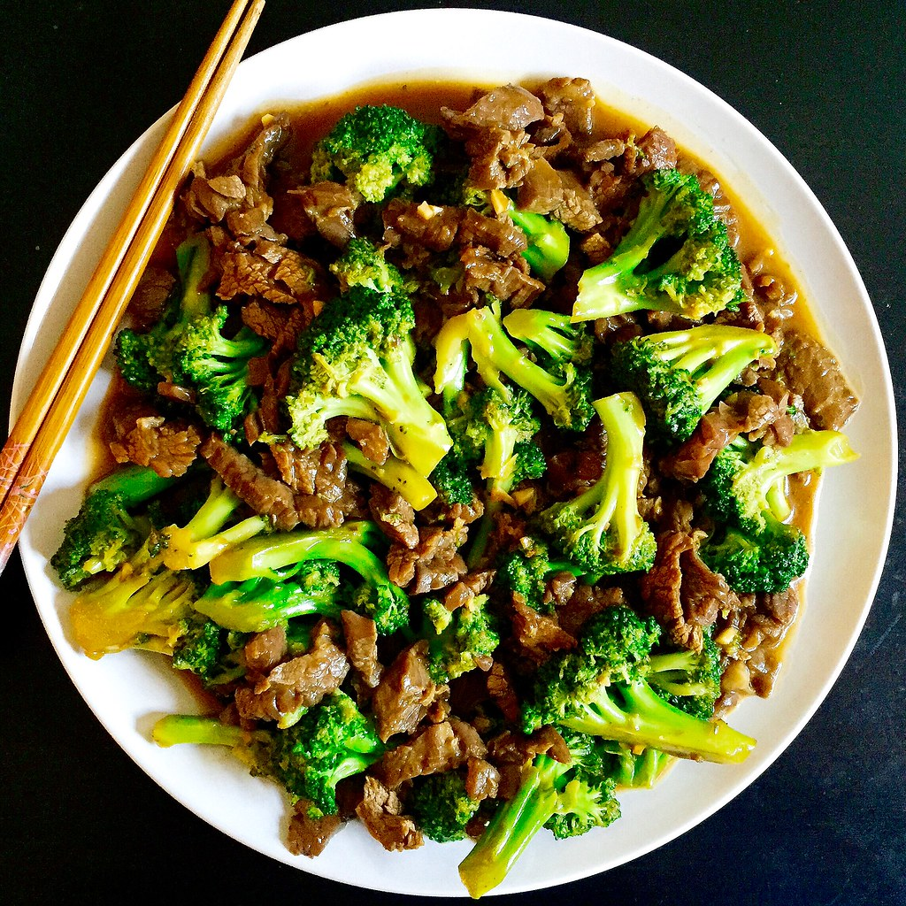

Beef and Broccoli

image courtesy of: https://www.flickr.com/photos/joyosity/28265304420
Description
Who needs take out when you can make this? Slices of beef and broccoli served in a rich sauce on top of rice or noodles.
Ingredients
- cornstarch
- flank steak
- low sodium soy sauce
- minced garlic
- fresh ginger
- vegetable oil
- brocolli
- white onion
Directions
- Cook rice
- Make a sauce
- Cook beef then set aside
- Cook onion and broccoli in the same pan
- Return beef and sauce to pan
- Plate and nom!